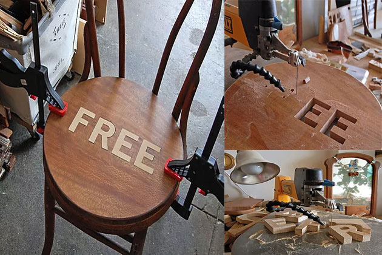

É Free!
Como uma simples atitude pode nos fazer pensar sobre nosso comportamento?!
É aqui que começa a historia sobre a nova atitude do francês Grégoire Abrial, que descobriu aos 20 anos, depois de desistir do curso de engenharia , que se tornaria um designer e começou a desenhar móveis na garagem de sua casa.
Mas foi morando em Nova York, por alguns anos, mobiliando sua casa com móveis descartados por outros e reformados por ele, que o ditado popular norte-americano “One man’s trash is another man’s treasure” “O lixo de um homem é o tesouro de outro homem” serviu de inspiração para criação de seu projeto Bright Friday, fazendo uma referência ao termo Black Friday.
Reaproveitamento
Como uma simples atitude pode nos fazer pensar sobre nosso comportamento!
Grégoire queria mostrar com o projeto, o quanto desperdiçamos diariamente e decidiu produzir doze peças como mesas, cadeiras e outros móveis,recolhidos no lixo de outras pessoas, e em seu estúdio reformaria estes móveis usando técnicas de marchetaria, inserindo em cada peça a palavra Free. A palavra Free, ao mesmo tempo em que sinalizava a gratuidade, poderia demostrar a capacidade do design em comunicar histórias e ideias positivas, e com esta atitude transformando peças do lixo em peças de luxo, verdadeiros “tesouros”.

Técnica da marchetaria utilizada para inserir a palavra “free” no mobiliário
Com as peças prontas teve a ideia então de presentear as pessoas que andavam pelas ruas de Nova York, e para isso espalhou os móveis em vários locais para que fossem encontrados e chamassem a atenção de bastante gente. Pois o objetivo principal de seu design é oferecer soluções cada vez mais sustentáveis para todos.
E quem sabe também podemos despertar nas pessoas uma consciência sustentável com novas atitudes?
Vamos pessoal, é só pegar esta ideia, como já foi dito é “Free”!
Quer ver mais algumas peças e outros trabalhos deste designer? é só entrar na pagina Gregoire Abrial